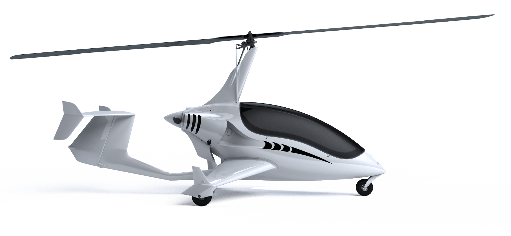

El reto de esta actividad será el de construir un vehículo que al mover sus ruedas con los motores, mediante engranajes, se mueva una hélice que tendrá en la parte superior.

Montaremos una base motriz y aprovecharemos el movimiento de los motores para trasladar el movimiento a la
hélice superior.
Podemos hacerlo con engranajes o con barra de transmisión.
Un ejemplo de montaje lo mostramos a continuación.
Conectamos los cables a los motores y a dos de las salidas identificadas con una letra y ya tendríamos
nuestro vehículo terminado.
La programación sería muy sencilla. Bastaría con mover la base motriz para que se mueva la hélice.